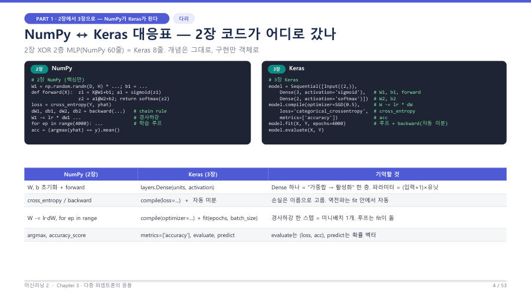

NumPy에서 Keras로 — 부품 대응표 ★
앞에서 NumPy로 손수 짠 신경망(가중치 초기화, 순전파, 손실, 역전파, 경사하강, 학습 루프)은 Keras에서 객체와 인자 하나씩으로 바뀌어요. 개념은 그대로이고 이름만 달라진 거예요. 슬라이드의 XOR 예제는 NumPy 60줄이 Keras 8줄이 돼요.
| 하고 싶은 일 | NumPy (손으로) | Keras (조립) | 기억할 것 |
|---|---|---|---|
| 가중합 → 활성화 한 층 | z = X@W + ba = sigmoid(z) | layers.Dense(units, activation=…) | Dense 하나 = 한 층. 파라미터 = (입력+1)×유닛 |
| 손실 계산 (+ 역전파) | cross_entropybackward(...) (Chain Rule) | compile(loss=…) + fit 안의 자동 미분 | 손실은 이름으로 고르고, 역전파는 fit 안에서 자동 |
| 경사하강 갱신 | W -= lr * dW | compile(optimizer=…) | 옵티마이저가 갱신 방식을 정함 |
| 학습 루프 | for ep in range(...) | fit(epochs=…, batch_size=…) | 루프는 fit이 돌려 줌 |
| 정확도, 평가, 예측 | argmax, accuracy_score | metrics=['accuracy'], evaluate, predict | evaluate는 (손실, 정확도), predict는 확률 벡터 |

NumPy는 재료를 사서 직접 손질하고 불 조절까지 하는 요리예요. Keras는 손질된 재료 상자(Dense, Dropout)를 순서대로 조립하는 밀키트예요. 조립은 쉬워졌지만, 맛이 이상할 때 어느 상자를 의심할지 알려면 각 상자가 안에서 무슨 일을 하는지 알고 있어야 해요. 그래서 시험도 "이 줄이 NumPy의 어느 줄이냐"를 물어요.
Dense라는 이름은 "촘촘하다", 즉 완전 연결(모든 입력이 모든 뉴런에 연결됨)이라는 뜻이에요. 교수님은 "크로스 엔트로피를 그렇게 복잡하게 배웠는데 코드로는 loss= 한 줄"이라고 했어요. 역전파의 미분 공식도 안 보이고 fit 안에 숨어 있어요.
Dense는 가중합 후 활성화를 수행하는 한 층이고, compile의 loss는 손실 함수, optimizer는 경사하강 갱신 방식을 지정하며, fit은 학습 루프와 자동 미분(역전파)을 수행한다. evaluate는 (손실, 정확도)를, predict는 클래스별 확률 벡터를 반환한다.
잠깐 확인 — NumPy의 W -= lr * dW 한 줄은 Keras의 어디에 해당하나요?
compile(optimizer=…)예요. 갱신 방식(경사하강과 그 변형)은 옵티마이저가 맡고, 반복은 fit이 돌려요.
화면을 가리고 "NumPy에서 Keras로 — 부품 대응표 ★"을(를) 친구에게 설명하듯 한 문장으로 말해 보세요. 막히면 위의 빨간 칸만 다시 보고 넘어가요.
자료: 6주차 · 머신러닝2_chapter3_redesign.pdf(p.1–17) · 머신러닝06.txt, 머신러닝07.txt(10/19 중간고사 복습)